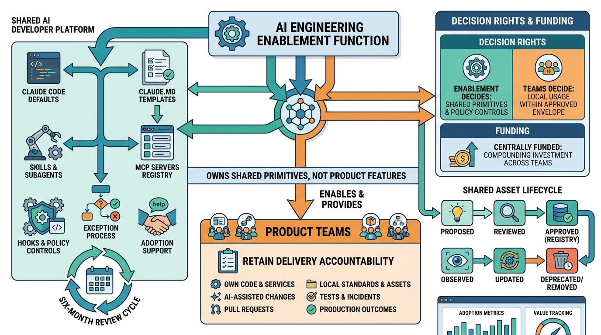

AI-Assisted Development
AI Operating Model: Dedicated AI Engineering Enablement Function

Image generated by Google Gemini (gemini-3-pro-image-preview)
AI-Assisted Development

Image generated by Google Gemini (gemini-3-pro-image-preview)